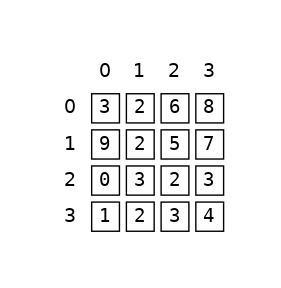

Lussen in lussen#
Geneste lussen!
Eendimensionale lists#
scores = [88, 82, 91, 79, 83, 79, 86, 92, 77, 88, 93, 82, 85, 86, 92, 79]
def compute_sum(L):
sum_values = 0
for i in range(len(L)):
sum_values += L[i]
return sum_values
def compute_avg(L):
sum_list = compute_sum(L)
return sum_list / len(L)
compute_avg(scores)
85.125
Tweedimensionale lists#
Zijn overal en worden ook wel list of lists (LoL) genoemd.
Denk bijvoorbeeld aan spreadsheets …
[
["Naam", "Vraag 1", "Vraag 2", "Vraag 3", "Vraag 4"],
["Peter Been", 88, 82, 91, 79],
["Jasper Klein", 83, 79, 86, 92],
["Linda Buitendijk", 77, 88, 93, 82],
["Myrthe Zomer", 85, 86, 92, 79]
]
while True#

Of natuurlijk afbeeldingen! Deze bestaan voornamelijk uit lijsten van pixels
[
[[255, 255, 255], [255, 255, 255]],
[[0, 0, 0], [0, 0, 0]],
[[255, 255, 255], [255, 255, 255]],
[[0, 0, 0], [0, 0, 0]]
]
Indices#

L = [
[3, 2, 6, 8],
[9, 2, 5, 7],
[0, 3, 2, 3],
[1, 2, 3, 4]
]
L[3]
[1, 2, 3, 4]
L[3][3]
4
L[3][3]
4

Dit lijkt veel op hoe velden op een schaakbord worden aangegeven, maar daar worden rijen (8 tot en met 1) en kolommen (a tot en met h) anders benoemd.
Loop to the max#
L = [6, 5, 21, 8, 2, 42, 7, 1]
max_value = L[0]
for x in L:
if x > max_value:
max_value = x
max_value
42
Een reeks analyseren#
Aandelenkoersen en prijzen#
L = [40, 80, 10, 30, 27, 52, 5, 15]
de elementen: prijzen
de indices: dagen
TR Investeringen#
Wij selecteren de beste dag voor aan- en verkoop om uw winst te maximaliseren…
index |
element |
|---|---|
Dag |
Prijs |
|
|
|
|
|
|
|
|
|
|
|
|
|
|
|
|
Wat is de beste investeringsstrategie voor de lijst L?
Hoe kunnen lussen hier bij helpen?
All Pairs algoritme#
Wanneer kopen en wanneer verkopen voor maximale winst?
Vergelijk alle mogelijke combinaties!
L = [40, 80, 10, 30, 27, 52, 5, 15]
(40, 80), (40, 10), (40, 30), (40, 27), ... # day 0
(80, 10), (80, 30), (80, 27), (80, 52), ... # day 1
Let op, elke dag wordt steeds met de volgende dag vergeleken!
Paarsgewijze vergelijkingen#
Vergelijkbare problemen
n-body probleem
shortest path probleem
closest pair probleem
Lussen!#
Paarsgewijs vergelijken
max-so-far = 0
for each buy-day, b:
for each sell-day, s:
compute the profit
if profit is > max-so-far:
remember it in a variable!
return profit, its b-day, and s-day
Verkoop is natuurlijk alleen toegestaan nadat aandelen zijn gekocht…
Voorbeeld#
De functie mindiff geeft het kleinste absolute verschil terug tussen twee elementen in L
mindiff([42, 3, 100, -9, 7])
geneste lussen
tussentijdse waarde bijhouden
Geneste lussen#
Gebruik twee geneste lussen voor het vergelijken van paren, bijvoorbeeld
for i in range(4):
for j in range(4):
Uitproberen …#
M = [1, 2, 3]
for i in range(len(M)):
for j in range(len(M)):
print(M[i], M[j])
1 1
1 2
1 3
2 1
2 2
2 3
3 1
3 2
3 3
Dit is een voorbeeld om te zien hoe met geneste lussen paren van elementen kunnen worden gevormd. Je ziet dat dit nog niet correct is omdat hier ook paren van dezelfde elementen worden gevormd (1 en 1, 2 en 2, etc.) én combinaties die twee keer voorkomen (bijvoorbeeld 1 en 3 en 3 en 1). Voor mindiff zal daar een oplossing voor moeten worden gevonden!
Waarde bijhouden#
Bewaar steeds de waarde van het minimum terwijl je twee keer door de elementen van L loopt
Begin met een startwaarde, die je per iteratie (wel of niet) aanpast.
mdiff = abs(L[0] - L[1])
Had mdiff niet 0 kunnen zijn? Dit had inderdaad gekund, maar er zijn nu in ieder geval waarden gebruikt die zich in de lijst bevinden, dus geen verassingen!
def mindiff(L):
mdiff = abs(L[1] - L[0]) # start value
for i in range(len(L)):
for j in range(..., len(L)):
if ...:
...
return mdiff # return result
Paarsgewijs#
Begin j altijd één positie na i, bijvoorbeeld:
M = [1, 2, 3]
for i in range(len(M)):
for j in range(i + 1, len(M)):
print(M[i], M[j])
1 2
1 3
2 3
Oplossing lussen#
def mindiff(L):
mdiff = abs(L[0] - L[1]) # start value
for i in range(len(L)):
for j in range(i + 1, len(L)):
if ...:
...
return mdiff # return result
Oplossingen waarde bijhouden#
def mindiff(L):
mdiff = abs(L[0] - L[1]) # start value
for i in range(len(L)):
for j in range(i + 1, len(L)):
if abs(L[i] - L[j]) < mdiff:
mdiff = abs(L[i] - L[j])
return mdiff # return result
Controleer iedere iteratie of het absolute verschil tussen de twee huidige elementen kleiner is dan het verschil dat eerder is gezien.
Stap voor stap#
mindiff([42, 3, 100, -9, 7])
Wat gebeurt in de lussen?
abs(42 - 3) = 39 # i = 0, j = 1, mdiff = 39
abs(42 - 100) = 58 # i = 0, j = 2
abs(42 - -9) = 51 # i = 0, j = 3
abs(42 - 7) = 35 # i = 0, j = 4, mdiff = 35
abs(3 - 100) = 97 # i = 1, j = 2
abs(3 - -9) = 12 # i = 1, j = 3, mdiff = 12
abs(3 - 7) = 4 # i = 1, j = 4, mdiff = 4
abs(100 - -9) = 109 # i = 2, j = 3
abs(100 - 7) = 93 # i = 2, j = 4
abs(-9 - 7) = 16 # i = 3, j = 4